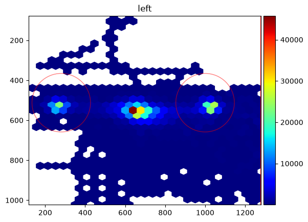
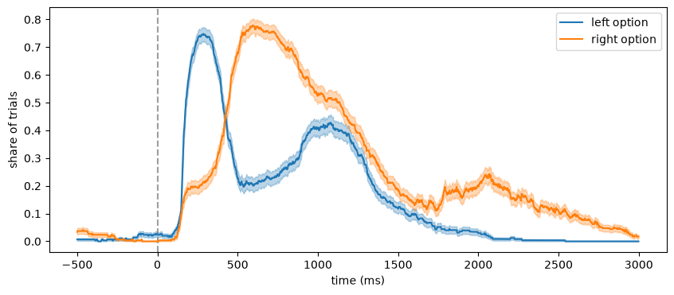
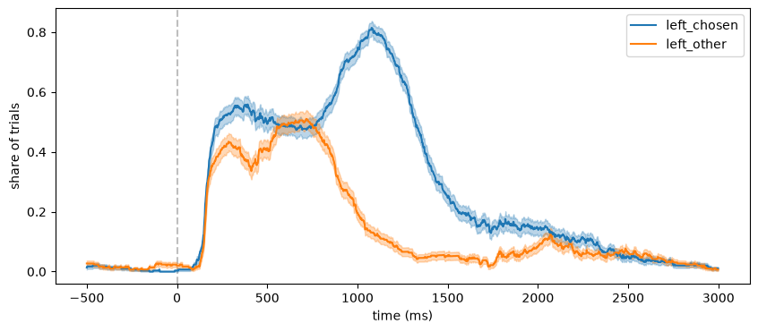
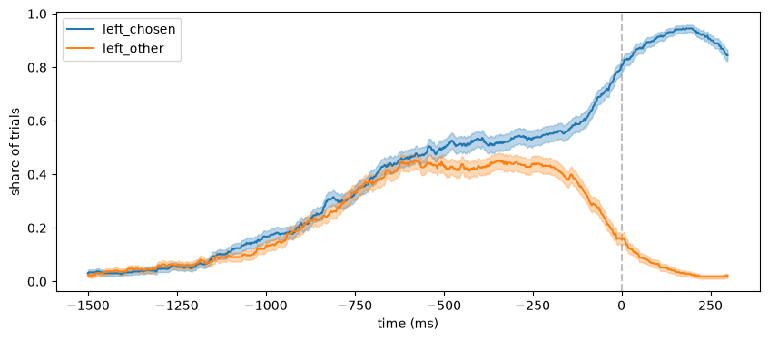
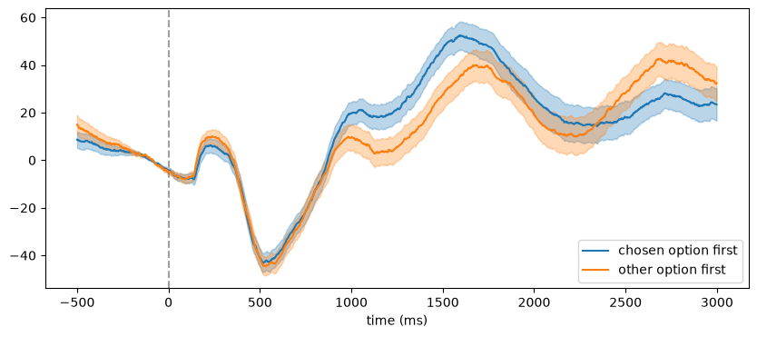
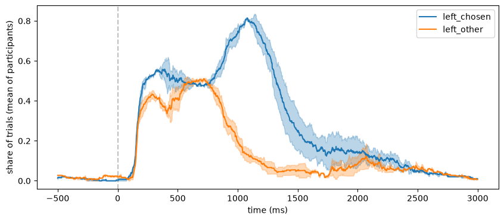

Gaze in regions of interest around events#
Where do participants look after a stimulus appears, and does it relate to what they choose? This tutorial cuts the gaze data into segments around events and analyses them with regions of interest (ROIs):
define ROIs on the screen
cut the data around the events into segments (
get_segments())mark where the gaze is in an ROI (
seg.gaze.roi_hits()) and plot the share of trials in each ROI over time (seg.gaze.plot_roi())measures per trial: dwell time and first entry (
seg.gaze.dwell_time(),seg.gaze.first_entry())combine gaze and pupil in the same trials, and average across participants
See Events, intervals and segments and Regions of interest in the user guide for an overview.
[1]:
import pypillometry as pp
from pypillometry import u
import numpy as np
import pandas as pd
import matplotlib.pyplot as plt
pp.logging_set_level("WARNING")
The data#
The example dataset rlmw_002 is a 20-minute reinforcement learning task (downloaded on first use). In each of its 300 trials, two options were shown to the left and right of the screen center; the participant chose one and received a reward. The events code this in their labels:
S_<trial>_<left option>_<right option>: stimulus onsetC_<trial>_<chosen option>_<side>: choice (side 1 = left, 2 = right)R_<trial>_<reward>: reward
We detect and interpolate the blinks, mask the gaze during blinks (blinks are detected on the pupil only) and outside the screen:
[2]:
d = pp.get_example_data("rlmw_002")
d = d | pp.pupil.blinks_detect() | pp.pupil.blinks_interpolate()
bl = d.get_blinks(variables="pupil")
d.mask_intervals({"left_x": bl["left_pupil"], "left_y": bl["left_pupil"],
"right_x": bl["right_pupil"], "right_y": bl["right_pupil"]})
d.gaze.mask_offscreen()
list(d.events.labels[:8])
[2]:
[np.str_('F_1'),
np.str_('S_1_1_5'),
np.str_('C_1_5_2'),
np.str_('R_1_15'),
np.str_('F_2'),
np.str_('S_2_6_2'),
np.str_('C_2_6_1'),
np.str_('R_2_20')]
The parts of the labels become metadata of the events (see the event metadata tutorial); fill_meta() copies the choice to all events of a trial, so that the stimuli know which side was chosen:
[3]:
ev = d.events.parse_labels(r"^[FSCR]_(?P<trial>\d+)")
ev = ev.parse_labels(r"^C_\d+_(?P<chosen>\d+)_(?P<side>\d+)")
ev = ev.parse_labels(r"^R_\d+_(?P<reward>\d+)")
ev = ev.fill_meta(["chosen", "side", "reward"])
d.set_events(ev)
d.events.filter("S_")[:3]
[3]:
| Onset (ms) | Label | trial | chosen | side | reward | |
|---|---|---|---|---|---|---|
| 0 | 5677.0 | S_1_1_5 | 1.0 | 5.0 | 2.0 | 15.0 |
| 1 | 9575.0 | S_2_6_2 | 2.0 | 6.0 | 1.0 | 20.0 |
| 2 | 12574.0 | S_3_2_1 | 3.0 | 2.0 | 1.0 | 18.0 |
Total: 3 events
Regions of interest#
The options were shown 8° to the left and right of the screen center. A heatmap of the gaze shows them as two clusters next to the central fixation point. We mark each with a circle of 3° radius (CircularROI.from_degrees() converts degrees to pixels with the experimental setup of the data):
[4]:
setup = d.experimental_setup
left_roi = pp.CircularROI.from_degrees(("-8 deg", "0 deg"), "3 deg", setup=setup, name="leftopt")
right_roi = pp.CircularROI.from_degrees(("8 deg", "0 deg"), "3 deg", setup=setup, name="rightopt")
d.plot.plot_heatmap(eyes="left", rois=[left_roi, right_roi]);

Segments around the stimuli#
get_epochs() defines a window around each stimulus, and get_segments() cuts all channels (pupil and gaze of both eyes) in these windows. The segments of all channels share the epochs, with the metadata of the events:
[5]:
epochs = d.get_epochs("S_", (-500, 3000) * u.ms)
seg = d.get_segments(epochs, name="stimulus")
seg
[5]:
SegmentedEyeData — stimulus
Channels (mean over segments; red line = event onset)
![left_x (7.0% missing) sparkline]()
![left_y (7.0% missing) sparkline]()
![left_pupil (0.0% missing) sparkline]()
![right_x (5.2% missing) sparkline]()
![right_y (5.2% missing) sparkline]()
![right_pupil (0.0% missing) sparkline]()
Epochs
Epochs 'S_' | 300 epochs, window (-500, 3000) ms
Where is the gaze over time?#
seg.gaze.roi_hits() adds a channel per eye, named after the ROI (left_leftopt), that is 1 where the gaze is in the ROI and 0 outside (masked where the gaze is masked). Its mean over the trials at each time point is the share of trials in which the participant looked at the ROI, a fixation curve:
[6]:
seg.gaze.roi_hits(left_roi)
seg.gaze.roi_hits(right_roi)
seg.channels
[6]:
['left_x',
'left_y',
'left_pupil',
'right_x',
'right_y',
'right_pupil',
'left_leftopt',
'right_leftopt',
'left_rightopt',
'right_rightopt']
[7]:
fig, ax = plt.subplots(figsize=(10, 4))
seg.gaze.plot_roi("leftopt", eyes="left", ax=ax, label="left option")
seg.gaze.plot_roi("rightopt", eyes="left", ax=ax, label="right option", show_legend=True)
ax.set_ylabel("share of trials");

The participant first looks at the left option (about 200 ms after the onset), then at the right one (about 600 ms), before choosing after about one second.
The ROI channels are masked arrays like all channels, so other curves can be computed from them. Here, we combine them into the share of trials in which the participant looked at the option that was chosen in this trial, and at the other one. np.ma.where keeps the masks (np.where would drop them):
[8]:
seg = seg.filter(side=[1, 2]) # trials with a choice
chose_left = seg.epochs.meta["side"] == 1
seg["left_chosen"] = np.ma.where(chose_left, seg["left_leftopt"], seg["left_rightopt"])
seg["left_other"] = np.ma.where(chose_left, seg["left_rightopt"], seg["left_leftopt"])
fig, ax = plt.subplots(figsize=(10, 4))
seg.plot(["left_chosen", "left_other"], ax=ax, show_legend=True)
ax.set_ylabel("share of trials");

Locked to the choice instead of the stimulus, the gaze moves to the option that is then chosen (the gaze cascade):
[9]:
choice = d.get_segments(d.get_epochs("C_", (-1500, 300) * u.ms), eyes="left",
name="choice").filter(side=[1, 2])
choice.gaze.roi_hits(left_roi)
choice.gaze.roi_hits(right_roi)
chose_left = choice.epochs.meta["side"] == 1
choice["left_chosen"] = np.ma.where(chose_left, choice["left_leftopt"], choice["left_rightopt"])
choice["left_other"] = np.ma.where(chose_left, choice["left_rightopt"], choice["left_leftopt"])
fig, ax = plt.subplots(figsize=(10, 4))
choice.plot(["left_chosen", "left_other"], ax=ax, show_legend=True)
ax.set_ylabel("share of trials");

Measures per trial#
seg.gaze.dwell_time() gives the time the gaze spends in an ROI in each trial, seg.gaze.first_entry() the time of the first sample in the ROI (from the onset on, by default). Both take an ROI or the name of ROI channels, and return a table with the onsets, labels and metadata of the epochs, which converts to a pandas DataFrame:
[10]:
dwell = pd.DataFrame(seg.gaze.dwell_time("chosen", window=(0, 1000)))
first = pd.DataFrame(seg.gaze.first_entry("chosen"))
dwell[["trial", "side", "reward", "left_chosen"]].head()
[10]:
| trial | side | reward | left_chosen | |
|---|---|---|---|---|
| 0 | 1.0 | 2.0 | 15.0 | 378.0 |
| 1 | 2.0 | 1.0 | 20.0 | 322.0 |
| 2 | 3.0 | 1.0 | 18.0 | 476.0 |
| 3 | 4.0 | 2.0 | 11.0 | 340.0 |
| 4 | 5.0 | 2.0 | 17.0 | 542.0 |
[11]:
dwell_other = seg.gaze.dwell_time("other", window=(0, 1000))["left_other"]
first_other = seg.gaze.first_entry("other")["left_other"]
pd.DataFrame({
"dwell time (ms, first second)": [dwell["left_chosen"].mean(), np.mean(dwell_other)],
"first entry (ms)": [first["left_chosen"].mean(), np.nanmean(first_other)],
}, index=["chosen", "other"]).round(0)
[11]:
| dwell time (ms, first second) | first entry (ms) | |
|---|---|---|
| chosen | 437.0 | 304.0 |
| other | 333.0 | 375.0 |
Masked samples (e.g., blinks) do not count; trials without usable samples get NaN.
Gaze and pupil in the same trials#
Because pupil and gaze are channels of the same segments, a selection of trials applies to both. Here, we compare the pupil response in the trials in which the participant looked at the later chosen option first with the others. keep() selects trials with a boolean array:
[12]:
chosen_first = first["left_chosen"].values < np.nan_to_num(first_other, nan=np.inf)
erpd = seg.pupil.baseline_correct((-200, 0), eyes="left", inplace=False)
fig, ax = plt.subplots(figsize=(10, 4))
erpd.keep(chosen_first).pupil.plot("left", ax=ax, label="chosen option first")
erpd.keep(~chosen_first).pupil.plot("left", ax=ax, label="other option first",
show_legend=True);

Several participants#
pp.group_segments() averages the trials of each participant (a list of segments, or a dict with their names). The result is again a SegmentedEyeData object, with one column per participant, so the fixation curves and ERPDs of the group are means across participants. Here, the first and second half of the session stand in for two participants:
[13]:
first_half = seg.filter(trial=lambda t: t <= 150)
second_half = seg.filter(trial=lambda t: t > 150)
group = pp.group_segments({"first half": first_half, "second half": second_half},
channels=["left_chosen", "left_other"])
group
[13]:
SegmentedEyeData — group_stimulus
Channels (mean over averages; red line = event onset)
![left_chosen (7.0% missing) sparkline]()
![left_other (7.0% missing) sparkline]()
Epochs
Epochs 'S_' | 2 epochs without time, window (-500, 3000) ms
[14]:
fig, ax = plt.subplots(figsize=(10, 4))
group.plot(["left_chosen", "left_other"], ax=ax, show_legend=True)
ax.set_ylabel("share of trials (mean of participants)");

The participants are columns like the trials before, with their name and number of trials in the metadata of the epochs. Averages by other metadata work the same way: pp.concat_segments() stacks the trials of all participants (with the metadata column "subject"), and average(by=...) averages them, e.g., per participant and side of the chosen option:
[15]:
both = pp.concat_segments({"first half": first_half, "second half": second_half},
channels=["left_chosen", "left_other"])
means = both.average(by=["subject", "side"])
means.epochs.as_pandas()[["label", "subject", "side", "n_trials"]]
[15]:
| label | subject | side | n_trials | |
|---|---|---|---|---|
| 0 | first half/2.0 | first half | 2.0 | 88 |
| 1 | first half/1.0 | first half | 1.0 | 61 |
| 2 | second half/1.0 | second half | 1.0 | 88 |
| 3 | second half/2.0 | second half | 2.0 | 62 |
The segments, with their ROI channels, can be saved with seg.write_file("stimulus.h5") and loaded with pp.SegmentedEyeData.from_file().